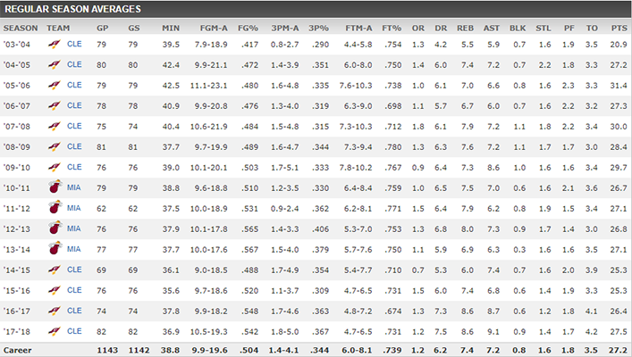

Amerykański koszykarz grający w Cleveland Cavaliers w NBA. Jego nominalna pozycja to niski skrzydłowy, lecz warunki fizyczne Jamesa (dynamika, waga) oraz jego wyjątkowy przegląd pola sprawiają, że trudno jest przyporządkować mu pozycję według tradycyjnych kryteriów, gdyż w praktyce może on pełnić zarówno rolę rozgrywającego, jak i silnego skrzydłowego. Otrzymał nagrodę najbardziej wartościowego gracza (MVP) ligi w sezonach 2008-2009, 2009-2010, 2011-2012, 2012-2013 oraz MVP finałów – 2011-2012, 2012-2013 i 2015-2016.LeBron Raymone James (ur. 30 grudnia 1984 w Akron, Ohio) – amerykański koszykarz grający w Cleveland Cavaliers w NBA.
Jego nominalna pozycja to niski skrzydłowy, lecz warunki fizyczne Jamesa (dynamika, waga) oraz jego wyjątkowy przegląd pola sprawiają,
że trudno jest przyporządkować mu pozycję według tradycyjnych kryteriów,
gdyż w praktyce może on pełnić zarówno rolę rozgrywającego, jak i silnego skrzydłowego.
Otrzymał nagrodę najbardziej wartościowego gracza (MVP) ligi w sezonach 2008-2009,
2009-2010, 2011-2012, 2012-2013 oraz MVP finałów – 2011-2012, 2012-2013 i 2015-2016.
Rozgłos jako przyszła gwiazda ligi zawodowej zyskał już grając w drużynie licealnej St. Vincent – St. Mary High School. Jego idolem z dzieciństwa
był Michael Jordan, czemu dawał wyraz nosząc na swojej koszulce w liceum oraz w drużynie Cleveland Cavaliers numer 23. W wieku 18 lat został wybrany z
pierwszym numerem w drafcie w 2003 roku przez Cleveland Cavaliers.
Przed swoim pierwszym występem w NBA James podpisał kontrakt reklamowy z firmą obuwniczą Nike wart 90 milionów dolarów,
będący największym kontraktem zawiązanym z nową gwiazdą.
Po pierwszym sezonie otrzymał nagrodę dla najlepszego debiutanta, a w następnych sezonach tytuły MVP Meczu Gwiazd (dwukrotnie: 2006, 2008)
oraz najważniejszą nagrodę indywidualną – NBA MVP w 2009, 2010, 2012 oraz w 2013. W 2006 oraz od 2008 do 2017 wybierany do pierwszej piątki ligi.
W 2008 został królem strzelców NBA. Corocznie od 2005 wybierany do Meczów Gwiazd NBA. Doprowadził Cleveland Cavaliers do play-offów w latach 2006-2010.
W 2007 roku prowadzona przez niego drużyna awansowała do finałów konferencji pierwszy raz od 1992 roku, a następnie do finału ligi – pierwszy raz w historii
klubu.
W sezonie 2007/2008 LeBron doprowadził Cavaliers do play-off, gdzie pokonali w pierwszej rundzie 4:2 Washington Wizards,
a w półfinale ulegli Boston Celtics 4:3, mimo rewelacyjnej gry Jamesa
(w szóstym meczu w Cleveland i siódmym spotkaniu w Bostonie LeBron zdobył razem 77 pkt, podczas gdy jego partnerzy z drużyny zanotowali w sumie 84 pkt).
James był członkiem Reprezentacji USA w koszykówce, która wygrała brązowy medal w 2004 roku w Atenach, a w 2008 zdobyła złoty medal na
Igrzyskach Olimpijskich w Pekinie i Igrzyskach Olimpijskich w Londynie w 2012 roku.
Przed sezonem 2010/11, opuszczając drużynę z Cleveland, w której grał od początku kariery, podpisał czteroletni kontrakt z Miami Heat,
tworząc gwiazdorski tercet wraz z Chrisem Boshem oraz Dwyane’em Wade’em. W sezonie 2010/2011 w Meczu Gwiazd w LA zaliczył drugie w historii tego Meczu
triple-double (pierwsze osiągnął Michael Jordan).
Mistrz NBA wraz z Miami Heat z sezonu 2011/12 oraz MVP tychże finałów. Powtórzył ten wyczyn w sezonie 2012/2013, kiedy jego Heat pokonali w siedmiu
meczach San Antonio Spurs.
W Finałach James dwukrotnie zaliczył triple-double.
16 stycznia 2013 został najmłodszym w historii NBA zawodnikiem, który przekroczył granicę 20 000 zdobytych punktów. Wyprzedził w ten sposób Kobe Bryanta.
Dwudziestotysięczny punkt zdobył w meczu przeciwko Golden State Warriors. Miał wtedy 28 lat i 17 dni.
12 lipca 2014 James powrócił do Cavaliers, podpisując z tą drużyną kontrakt, który według ESPN został zawarty na dwa lata i jest wart 42 miliony dolarów.
20 czerwca 2016 James zdobył swoje trzecie mistrzostwo i pierwsze z Cleveland Cavaliers. W siedmiu meczach Cavaliers wygrali 4-3 z Golden State Warriors.
Cavaliers wygrali mistrzostwo podnosząc się ze stanu 1-3, wcześniej żadna drużyna w historii finałów nie wygrała mistrzostwa gdy przegrywała 1-3 po czterech
spotkaniach.
LeBron do trzeciego mistrzostwa dołożył trzeci tytuł MVP finałów NBA.
W czasie sezonu 2016/2017 wyprzedził Hakeema Olajuwona, Elvina Hayes'a, Mosesa Malone'a i Shaquille'a O'Neal'a na liście najlepszych strzelców w historii NBA.
Zajmuje obecnie siódme miejsce z dorobkiem 30 190 punktów. W maju 2017 roku wyprzedził Michaela Jordana i został liderem w kategorii punktów zdobytych
playoffs. Po raz siódmy z rzędu a ósmy w karierze awansował do finałów NBA, trzeci raz z rzędu stając naprzeciwko Golden State Warriors. Został pierwszym
zawodnikiem w historii finałów, który notował triple-double w finałowej serii. Mimo świetnych statystyk indywidualnych (33,6 punktu, 12,0 zbiórek i 10,0 asyst)
musiał uznać wyższość rywala z Oakland, przegrywając serię 1-4.
Podczas meczu numer 4 uzyskał dziewiąte w karierze triple-double i wyprzedził Magica Johnsona na liście zawodników z największą ilością triple-doubles w
finałach NBA.
24 stycznia 2018 w meczu przeciwko San Antonio Spurs został najmłodszym (33 lata i 25 dni) w historii NBA, który przekroczył granice 30000 punktów w karierze,
pobijając rekord Kobe Bryanta (34 lata i 104 dni). Jest pierwszym w historii i jak na razie jedynym zawodnikiem NBA,
który osiągnął 30000 punktów, 7000 asyst i 7000 zbiórek w karierze

Mistrz NBA (2012, 2013, 2016)
Wicemistrz NBA (2007, 2011, 2014, 2015, 2017)
MVP:
sezonu zasadniczego (2009, 2010, 2012, 2013),
finałów NBA (2012, 2013, 2016),
meczu gwiazd NBA (2006, 2008, 2018)
Laureat nagród:
Debiutant Roku NBA (2004)
J. Walter Kennedy Citizenship Award (2017)
Uczestnik meczu gwiazd NBA (2005–2018)
Zaliczony do:
-Pierwszego składu:
NBA (2006, 2008–2017)
debiutantów NBA (2004)
defensywnego NBA (2009–2013)
-Drugiego składu:
NBA (2005, 2007)
defensywnego NBA (2014)
Lider:
strzelców NBA: 2008
Play-off:
Średniej zdobytych punktów (2009, 2012)
Liczbie celnych rzutów wolnych (2007, 2012, 2013, 2017)
32-krotny zawodnik miesiąca konferencji wschodniej NBA (listopad 2004–2005, 2008–2009, 2012,
grudzień 2009–2010, 2012–2013, styczeń 2005, 2008–2013, luty 2008, 2010, 2012–2014, 2015, 2016 marzec 2006–2007, 2009, 2013,
2015, 2016 kwiecień 2009, 2011, 2016 – stan na czerwiec 2016)
6-krotny debiutant miesiąca konferencji wschodniej NBA (listopad 2003–kwiecień 2004)
Reprezentacja
Mistrz:
olimpijski (2008, 2012),
Ameryki (2007)
Brązowy medalista:
igrzysk olimpijskich (2004),
mistrzostw świata (2006)
Koszykarz Roku – USA Basketball Male Athlete of the Year (2012)
Lider igrzysk olimpijskich w skuteczności rzutów z gry (2012)